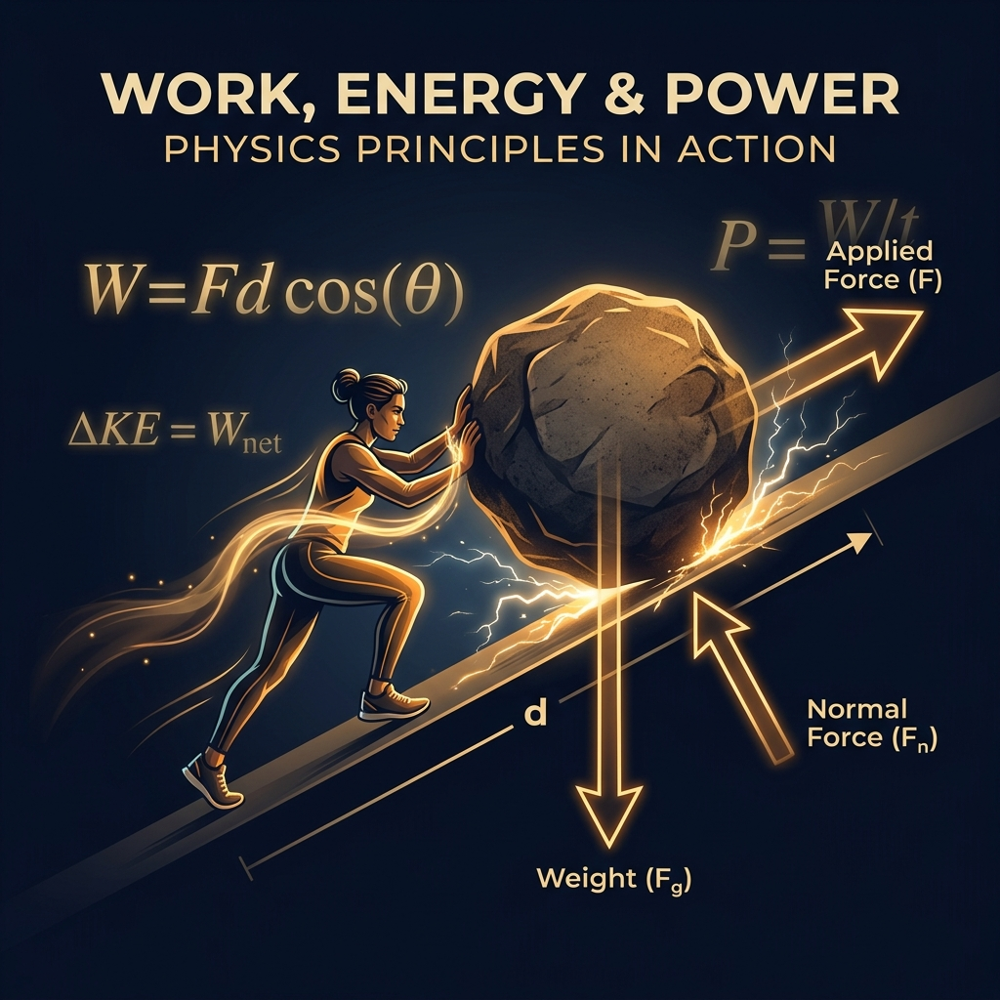

// Modular Course Design · Instructional Sequencing · Physics Education
"What if physics stopped being formulas on a page — and became something you could trace, connect, and build step by step?"
DESIGN PREMISEThis MOOC was designed to make the interconnected concepts of Work, Energy, and Power genuinely accessible to self-paced learners. Too often, physics courses jump straight to equations without building the intuitive groundwork — learners end up memorising without understanding.
This course was designed to reverse that sequence: establish conceptual clarity first, then introduce formal notation. Every module anchors new knowledge in a real-world context before formalising it mathematically.

Each module is self-contained — a learner can pause and return without losing their understanding. The sequence is designed so that each concept builds naturally on the one before it.
Establishing the physical definition of work through real-world scenarios — pushing a trolley, lifting a bag — before introducing W = F × d.
Exploring kinetic and potential energy through everyday examples. Concepts introduced through observation, not equation.
Connecting motion to mathematical expression. Worked examples show how speed and mass combine to produce measurable energy.
Gravitational and elastic forms, visualised through diagrams and relatable contexts — a lifted book, a stretched spring — before formal derivation.
The rate of energy transfer — introduced by comparing a student and an elevator doing the same task differently. Same work, different power.
Consolidation of all five concepts through an interactive recap and reflective check-in activities — making sure learning sticks, not just accumulates.
Every concept starts with a relatable, real-world context. The learner encounters the idea before seeing the formula.
Formal notation is introduced only after the intuitive groundwork is in place — reducing the abstraction barrier.
Step-by-step solved problems show the thinking, not just the answer — modelling how to approach new problems independently.
Diagrams, annotated images, and visual scaffolds serve learners who process information differently from text-primary approaches.
Lightweight self-checks within each module help learners confirm understanding before moving to the next concept.
Each module works as a standalone unit — learners can pause, return, and re-engage without needing to restart from the beginning.
Sequencing is the real design work. Knowing the physics wasn't enough — the challenge was deciding when to introduce each idea, in what form, and how to structure the transition from concrete to abstract so that each module felt earned, not imposed. Designing this course made me think carefully about the difference between having knowledge and building it.